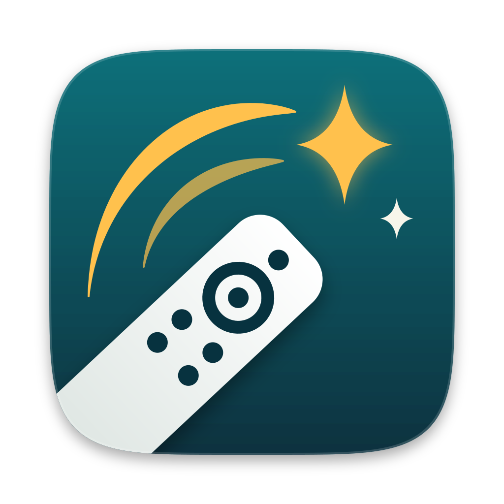
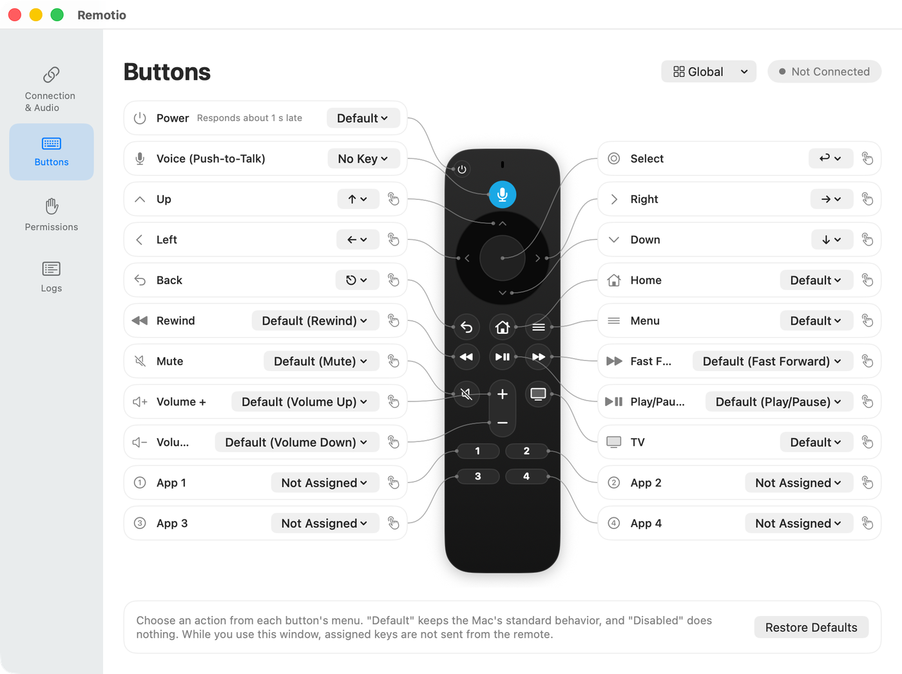

RemotioRemotio turns the Alexa Voice Remote into a push-to-talk microphone and a programmable controller for your Mac. Hold the voice button to dictate, and make every other button do what you want.

Hold the voice button and speak. The audio goes to the virtual microphone “Remotio Microphone”, which any app can use as its input.
Assign a dictation app’s push-to-talk key to the voice button, or start macOS Dictation while you hold it.
Send a key or shortcut, a media key, or a system action. A button can also open a URL, such as a Raycast link, or run a shell command.
Give each button up to three actions: press, long press, and double press.
Use different assignments while a specific app is in front. Anything you don’t change follows the global assignments.
Connect more than one remote at a time. Each remote keeps its own assignments.
| Remote | Buttons | Microphone |
|---|---|---|
| Alexa Voice Remote (comes with the Fire TV Stick 4K) | Yes | Yes |
| Alexa Voice Remote Pro | Yes | Yes |
With some compatible (non-Amazon) Remote Pro models, the microphone may not work well.
If you’ve tried Remotio with another remote, please share how it went in Issues.
Remotio.dmg from Releases and move Remotio to the Applications folder.See the README for details and known limitations.